Miscellanea
Other bits and pieces.
Pictures
I've been lucky enough to have had an excuse to travel to some pretty amazing places for work; here are a selection of photos I've taken along the way. For more information about my reasons for visiting each place, please see my CV.
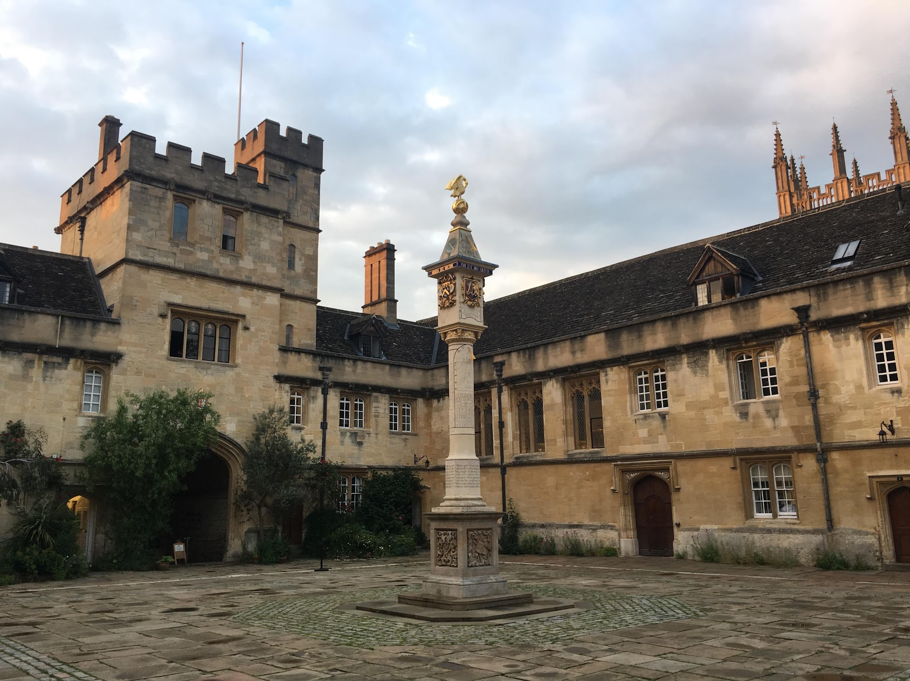
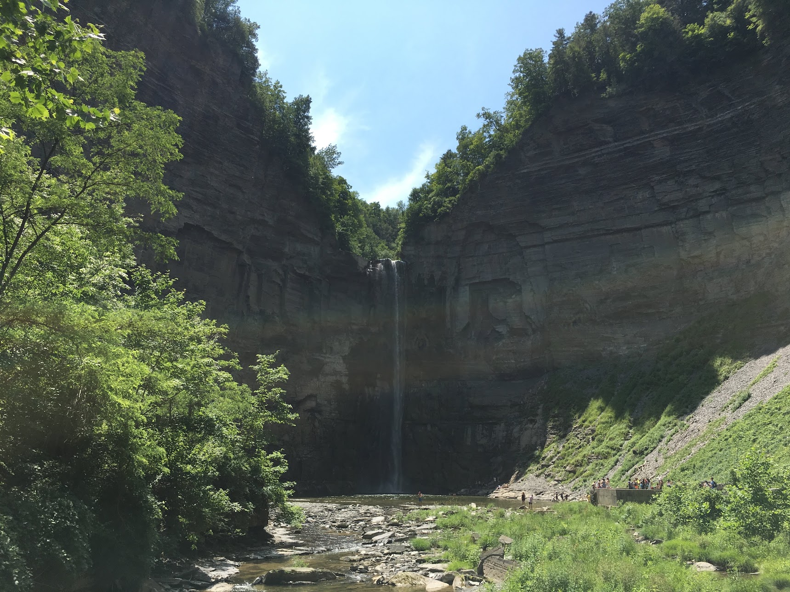
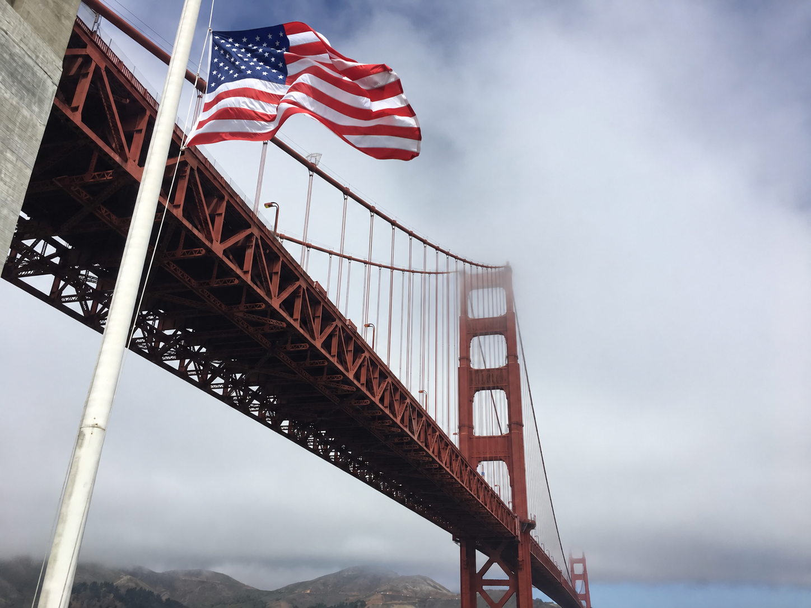
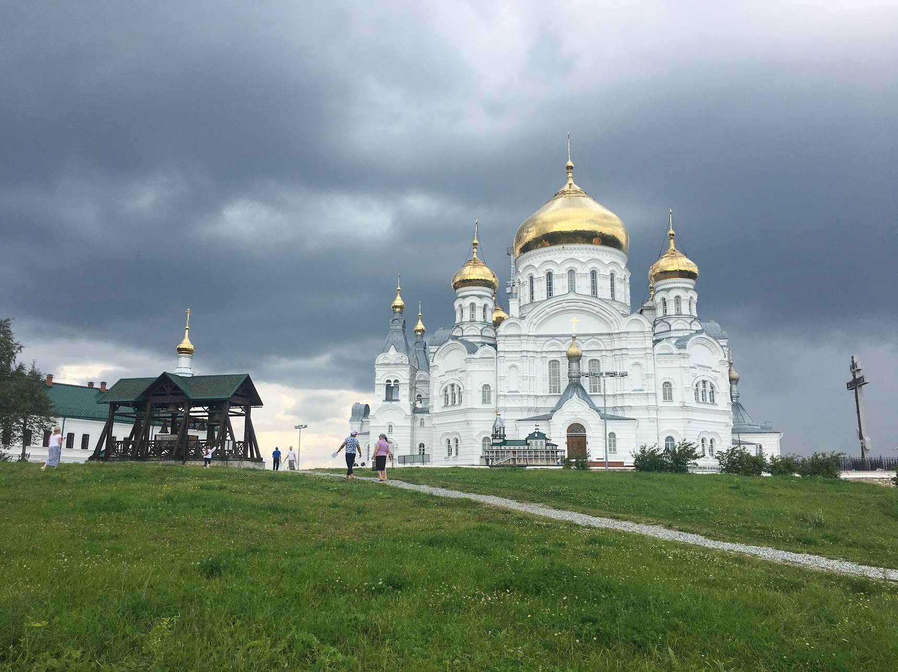
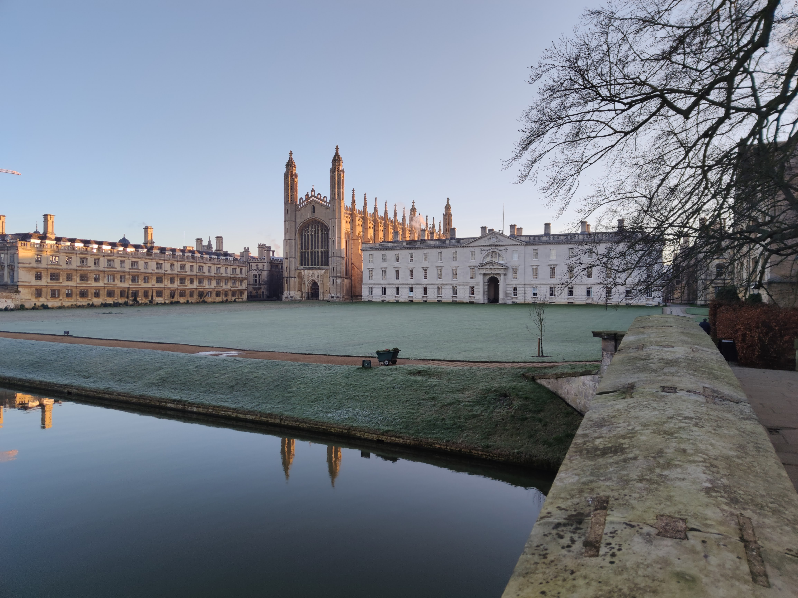
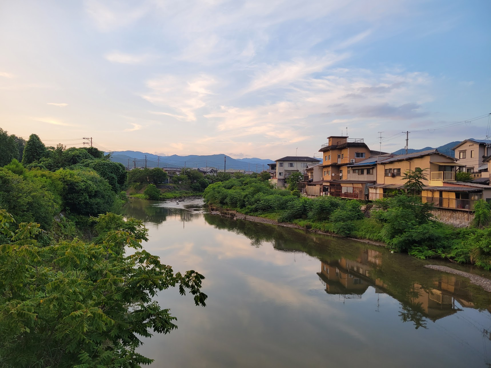
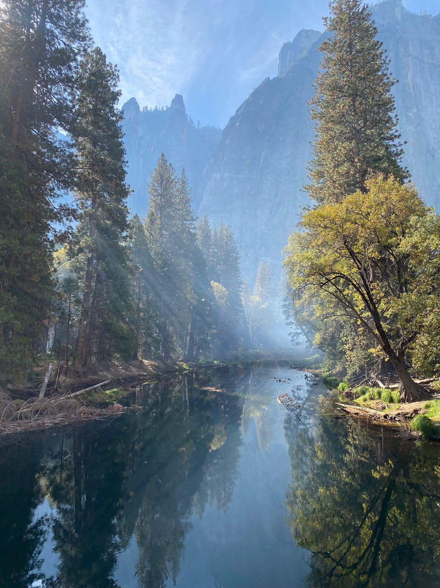
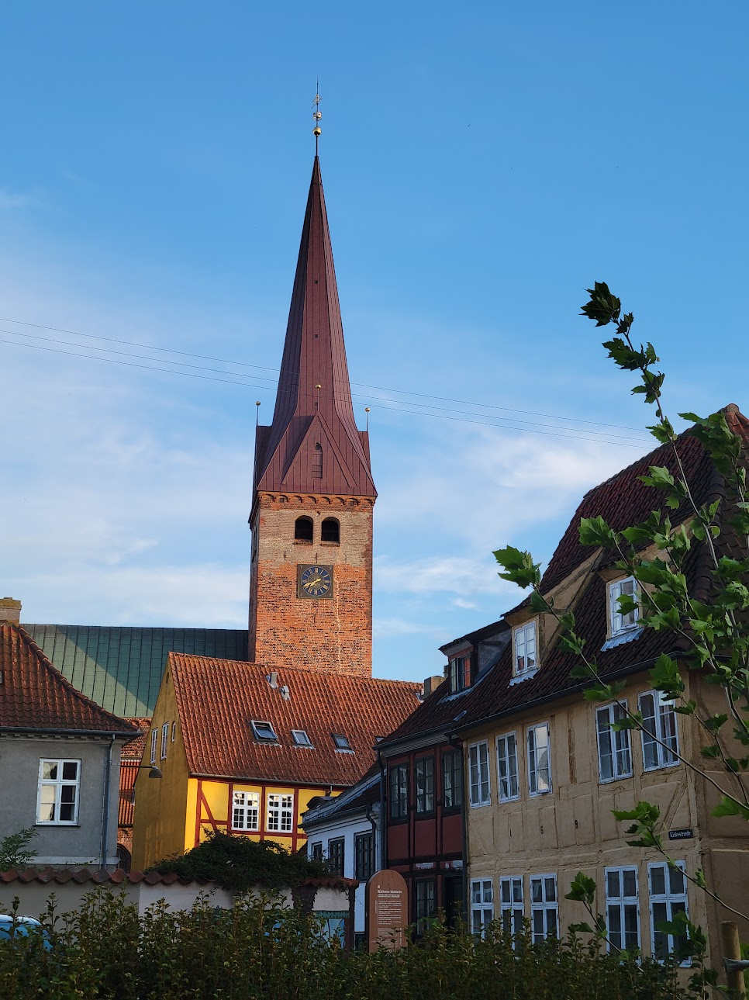
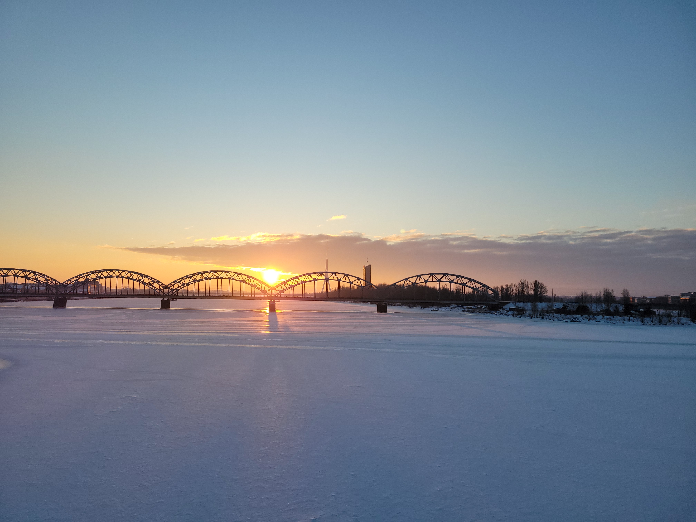
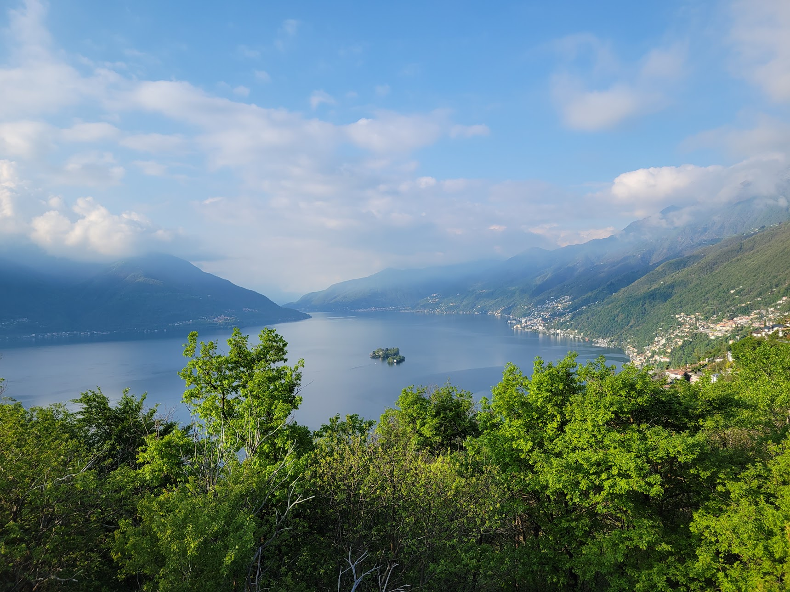
Dogs!
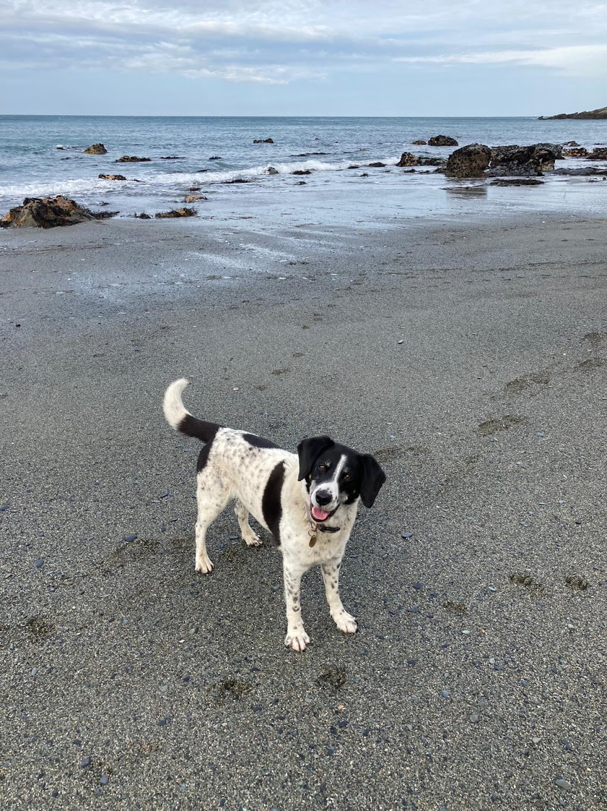
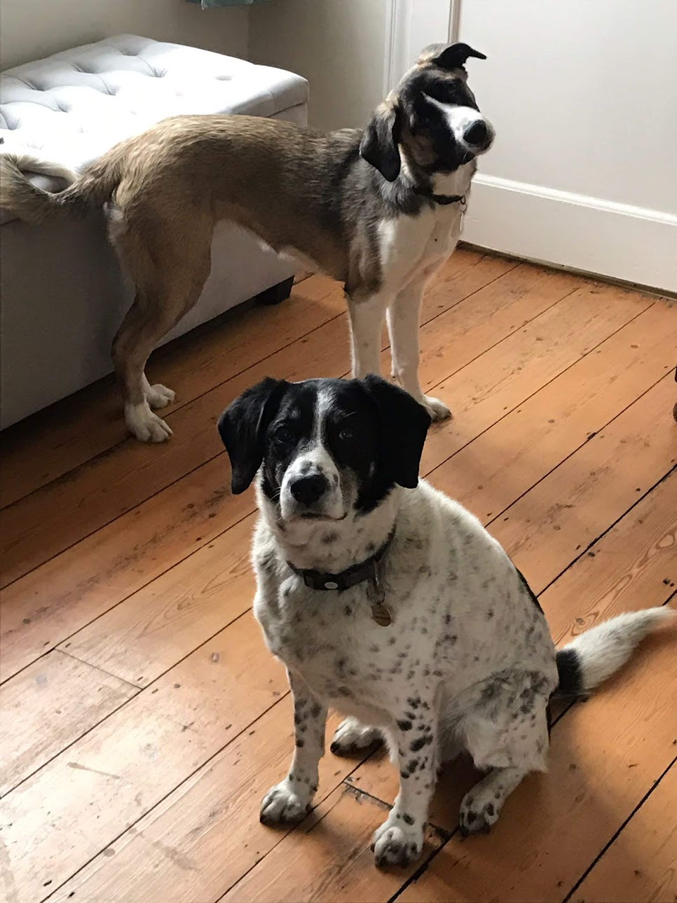
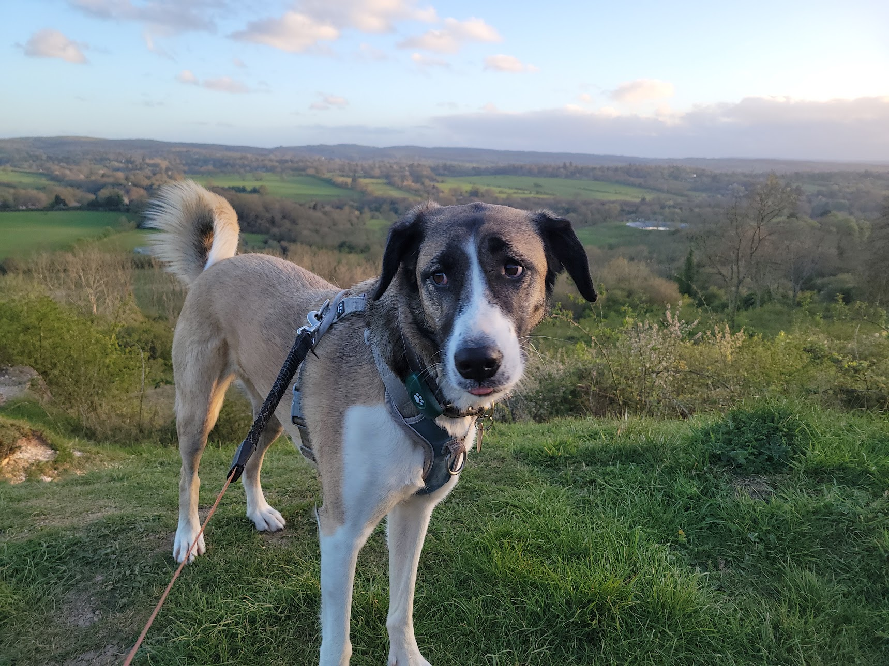
Sport
When I'm not working I love to spend as much time outside as possible. Here are some sporty things I've done.
Running: 5k: 17:06, HM: 76:33, M: 2:55:22
Cycling: My (distinctly average) British and Danish racing profiles.
Rowing: While at Oxford I was president of Corpus Christi College Boat Club and raced in three seasons of Torpids and Eights (see here). I was never bumped! :)
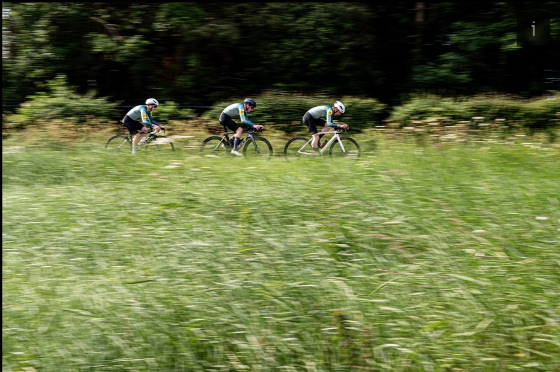